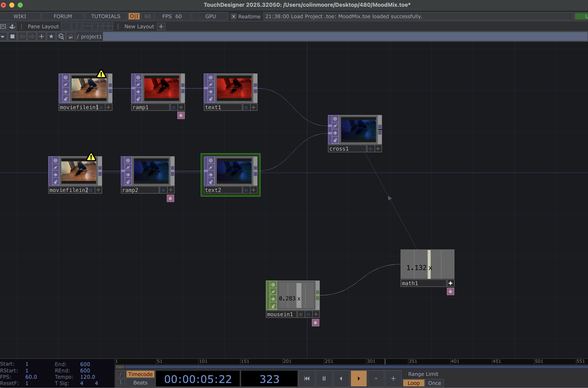

Mood Mix
Concept & Intent
Going into this exercise, I did not start with a predefined emotional outcome. Instead, my initial intent was simply to work with an existing video. I chose a video of my dogs playing together because it was easily accessible and emotionally meaningful, allowing me to focus more on learning TouchDesigner rather than sourcing new content.
As I began building the network and experimenting with interaction and color, the emotional direction of the project developed naturally. The contrast between red and blue, combined with the crossfading interaction, began to suggest feelings of fear and sadness. These moods were not fully planned from the beginning but emerged through testing, adjustment, and aesthetic decision-making during the process.
Process of Creating this Exercise
- I started by choosing my video, which was footage of my dogs playing together when my second dog was still a puppy.
- Next, I added two Movie File In TOPs and connected each of them to separate Ramp TOPs. I changed the colors of the ramps so I could clearly see what was being output when I connected the two Ramp TOPs to a Cross TOP.
- Third, I added a Mouse In CHOP and connected it to the Cross TOP. I didn’t like how the transition felt at first, so I added a Math CHOP between them and experimented with the multiply value. I found that a value of 4 worked best, so I kept it.
- After that, I experimented with the ramp colors and found that I liked blue and red the most.
- Finally, I added two Text TOPs and connected them to the ramps and then to the Cross TOP. I used bold text so the words were still visible even though they matched the background color. The red reminded me of wolves, since dogs are domesticated wolves, so the red text became “Gory Wolves.” For the blue, I was originally aiming for gray, but blue worked better to express sadness and nostalgia, referencing the “Good Old Times” and how fun they were. Overall, the emotions I wanted to convey were sadness and fear.
Process & Results
TouchDesigner Network
Editor network snapshot showing the complete TouchDesigner flow for my Mood Mix exercise